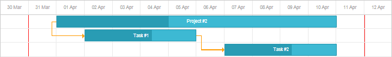

Dragging allows users to quickly change the start (end) dates of the tasks, their duration.
By default, the drag-and-drop is enabled and the user can drag a task along its row in the timeline.
To customize the drag-and-drop behavior, use the following events:
Let's consider typical cases when the default drag behavior needs customization:
To deny dragging of specific tasks, use the onBeforeTaskDrag event:
gantt.attachEvent("onBeforeTaskDrag", function(id, mode, e){
if(gantt.getGlobalTaskIndex(id)%2==0){
return false; //denies dragging if the global task index is odd
}
return true; //allows dragging if the global task index is even
});
To deny dragging tasks out of specific dates, use the onTaskDrag event.
The onTaskDrag event:
Shortly, all happens in the following order:
Let's assume that you want to forbid users to drag tasks out of the "31 March, 2020 - 11 April, 2020" interval.

Then, you can use the code as in:
Denying dragging tasks out of interval - [31.03.2020, 11.04.2020]
var leftLimit = new Date(2020, 2 ,31), rightLimit = new Date(2020, 3 ,12);
gantt.attachEvent("onTaskDrag", function(id, mode, task, original){
var modes = gantt.config.drag_mode;
if(mode == modes.move || mode == modes.resize){
var diff = original.duration*(1000*60*60*24);
if(+task.end_date > +rightLimit){
task.end_date = new Date(rightLimit);
if(mode == modes.move)
task.start_date = new Date(task.end_date - diff);
}
if(+task.start_date < +leftLimit){
task.start_date = new Date(leftLimit);
if(mode == modes.move)
task.end_date = new Date(+task.start_date + diff);
}
}
});
Related sample: Denying dragging tasks out of specific dates
To allow dragging children when the user is dragging their parent's task, use the onTaskDrag event (see more on the event above):
gantt.attachEvent("onTaskDrag", function(id, mode, task, original){
var modes = gantt.config.drag_mode;
if(mode == modes.move){
var diff = task.start_date - original.start_date;
gantt.eachTask(function(child){
child.start_date = new Date(+child.start_date + diff);
child.end_date = new Date(+child.end_date + diff);
gantt.refreshTask(child.id, true);
},id );
}
});
//rounds positions of the child items to scale
gantt.attachEvent("onAfterTaskDrag", function(id, mode, e){
var modes = gantt.config.drag_mode;
if(mode == modes.move ){
var state = gantt.getState();
gantt.eachTask(function(child){
child.start_date = gantt.roundDate({
date:child.start_date,
unit:state.scale_unit,
step:state.scale_step
});
child.end_date = gantt.calculateEndDate(child.start_date,
child.duration, gantt.config.duration_unit);
gantt.updateTask(child.id);
},id );
}
});
This functionality is available in the Gantt PRO edition only.
Tasks of the project type are not draggable by default. You can enable drag and drop of projects using the drag_project config:
gantt.config.drag_project = true;
Related sample: Draggable projects
There are several ways of implementing tasks moving with their dependent tasks. You can read about all of them in a separate article Dragging Tasks Together with Their Dependent Tasks.
Minimal task duration can be specified via the min_duration setting.
The option defines the minimum size of the task that can be set during resizing and can be used for preventing users from setting a zero duration.
The value is set in milliseconds:
// 1 day
gantt.config.min_duration = 24*60*60*1000;
//OR
// 1 hour
gantt.config.min_duration = 60*60*1000;
If you have a large dataset in the Gantt chart, you often need to drag a task to a new distant position or set links between tasks located at a significant distance.
In this case the autoscroll functionality is of great help. It is enabled by default, but you can manage this behavior via the autoscroll configuration option.
gantt.config.autoscroll = false;
gantt.init("gantt_here");
Besides, you can adjust the speed of autoscrolling in milliseconds with the help of the corresponding property - autoscroll_speed:
gantt.config.autoscroll = true;
gantt.config.autoscroll_speed = 50;
gantt.init("gantt_here");